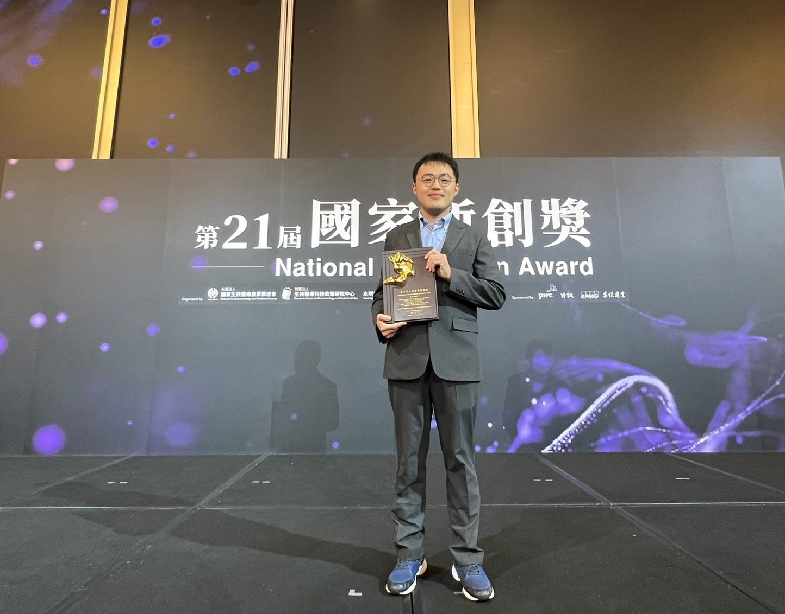

跨物種模型遷移與藥物再利用
用人類轉錄體與藥物基因體學資料把模型訓好，再透過同源基因對應與遷移學習，把藥物再利用策略套到伴侶動物的疾病模型。第一個目標是貓瘟病毒。
transfer learningdrug repurposingortholog mappingtranscriptomics
我訓練出來就是個什麼都做一點的人，大學學生命科學與資訊，碩博在小鼠分子機制和 NGS 罕病診斷之間來回，博後做癌症 RNA-seq biomarker，現在在獸醫學院嘗試把人類基因體學的方法，轉到伴侶動物的疾病。廣度是我的底牌，深度還在長。

研究室成立第一年，時間分三塊：教學、第一個國科會計畫、還有把分析環境搭起來。學生還在招，所以現在大多數工作是我自己做的筆記與雛形。
這個頁面會持續更新。如果你是碩士生、合作者、或只是看到「把人類資料轉到動物」這句話想聊聊，寄封信給我。
廣度可能是我這種訓練背景最誠實的形容。每跨一步，我都把前一步的工具帶過來，這張圖也是我現在能做「人類→動物」遷移學習的底氣。
研究方向分成四條，但底層共用一套方法學：把在人類做成熟的計算流程，換上對應到動物的資料與目標。以下這張圖標出了四條軸之間真實的依賴關係，不是排列裝飾，是我每天在想的事。
用人類轉錄體與藥物基因體學資料把模型訓好，再透過同源基因對應與遷移學習，把藥物再利用策略套到伴侶動物的疾病模型。第一個目標是貓瘟病毒。
用 RFdiffusion、BindCraft 這類 AI 蛋白質設計工具，嘗試做獸醫診斷與治療用的新結合子。目前還在 proof-of-concept。
田野樣本常見的檢體純度不足、宿主細胞干擾、訊號稀薄，這一條線就是想辦法讓這些「髒資料」還是有用。
使用 TWB、NBCT、健保資料庫，與北榮、國衛院、高醫及業界合作，做癌症風險預測、罕病辨識、NGS 資料庫建置。這條線也是我訓練的延續。
教學是我現在每天最大一塊時間。我自己一路走下來學的是「換語言」的能力，從濕 lab 換到乾 lab、從 Perl 換到 Python、從小鼠換到人換到貓。我相信計算思維是現代生醫研究者的基本能力，所以課程不會停在工具層面：我想讓學生練習把問題拆開，再用資料跟程式去回答。
如果你是大學部的學生，別怕寫程式，我們會從頭開始。如果你是碩士生，我們會從文獻閱讀與一個小資料集開始，題目會依你的背景跟進度展開。沒有統一的起跑線。
/* 我訓練出來就是個什麼都做一點的人。大學學生命科學與資訊， 碩博在小鼠分子機制和 NGS 罕病診斷之間來回，博後做癌症 RNA-seq biomarker 跟國家級資料庫，現在在獸醫學院嘗試把人類基因體學的方法 轉到伴侶動物的疾病。廣度是我的底牌，深度還在長。*/
undergrad ┐
life sci + │ ─▶ rodent + NGS ┐
cs dual │ rare disease │ ─▶ cancer RNA-seq ┐
│ wet + dry │ biomarkers │ ─▶ ★ NPUST vet med
│ │ nat'l NGS │ transfer learning
│ │ │ → companion animals
└──────────────────────┴───────────────────────┘
breadth carried forward: programming · variant calling · transcriptomics · cross-species priors
# 每一階段我都把工具往下帶。現在的主力是：把人類成熟的流程，降落到動物的髒資料上。
┌─────────────────────┐ ┌─────────────────────┐
│ 01 TRANSFER │─────────────▶│ 02 DE NOVO DESIGN │
│ human → animal │ structure │ RFdiffusion │
│ drug repurposing │ priors │ BindCraft │
└──────────┬──────────┘ └──────────┬──────────┘
│ │
│ shared methods · ortholog · ESM │
│ │
┌──────────┴──────────┐ ┌──────────┴──────────┐
│ 03 METAGENOMICS │◀────────────▶│ 04 HUMAN DATA │
│ field samples │ real-world │ TWB · NBCT · NHI │
│ custom pipelines │ validation │ precision medicine │
└─────────────────────┘ └─────────────────────┘
# 大學部手把手；研究所開放式題目 + 文獻討論。適合願意穩定學習的人。
碩士生招募中。適合背景：獸醫 / 生物 / 植醫 / 農業 / 資管 / 統計。 寫程式的經驗不是必要，但好奇心是。
我訓練的軌跡是一條折返的路：大學同時讀生命科學和資訊，碩博班在小鼠分子機制與 NGS 罕病診斷之間來回，博後做癌症 RNA-seq biomarker 與國家級資料庫建置。每跨一步，我都試著把前一步的工具帶過來。
現在我在獸醫學院，嘗試做的是把人類基因體學裡已經成熟的方法，遷移到伴侶動物的疾病。這件事的可行性來自於一個很務實的觀察：人類的藥物擾動資料庫已經累積了數十年，但貓狗的還非常稀疏，如果能用同源基因與遷移學習把訊號搬過去，就可能在短時間內打開獸醫臨床的藥物再利用空間。
研究室的工作目前分成四條軸，但它們共用同一套底層方法，把在人身上成熟的計算流程，換上動物的資料與目標。
教學是我現在每天最大的一塊時間。我相信計算思維是現代生醫研究者的基本能力，但教學不能只停在工具層面。我想讓學生練習的是：提出對的問題、把問題拆開、再用資料跟程式去回答。
大學部手把手，研究所放手做。沒有統一的起跑線：碩士生會從文獻閱讀與一個小資料集開始，題目依背景與進度展開。
目前招收對計算生物學有興趣的碩士生。獸醫、生物、植物醫學、農業、資管、統計，只要你對生醫問題有好奇，都適合。不要求入門前就會寫程式。